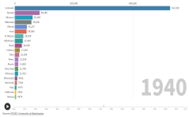
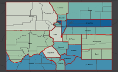
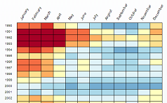
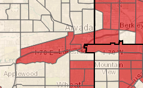

DOLA Webmaps
 Municipal Boundary Map
Municipal Boundary Map
Census and American Community Survey
 ACS 2015-2019
ACS 2015-2019 ACS 2013-2017
ACS 2013-2017 ACS 2012-2016
ACS 2012-2016ACS 2007-2011
 ACS 2006-2010
ACS 2006-2010 Query Data
Query Data
Population
 Population Change By Age:
Population Change By Age:
1990-2050 Population Change:
Population Change:
Births, Deaths, and Migration Colorado County Bracketology
Colorado County BracketologyHistorical Birthplace of Colorado Residents
 Historical Residence of Colorado Born
Historical Residence of Colorado Born Animated Population Chart
Animated Population Chart Colorado County Population
Colorado County Population Age Animation
Age AnimationHistorical County Populations
 Population and Housing Density 2010
Population and Housing Density 2010
Economic
 Job Sectors
Job Sectors DOLA Grants Map
DOLA Grants MapColorado Counties Unemployment
Job Change
Income and Poverty
 RUCA Urban-Rural Map
RUCA Urban-Rural Map SRF Disadvantaged Communities
SRF Disadvantaged CommunitiesLow & Moderate Income (HUD FY 2019)
 Poverty by Age
Poverty by Age